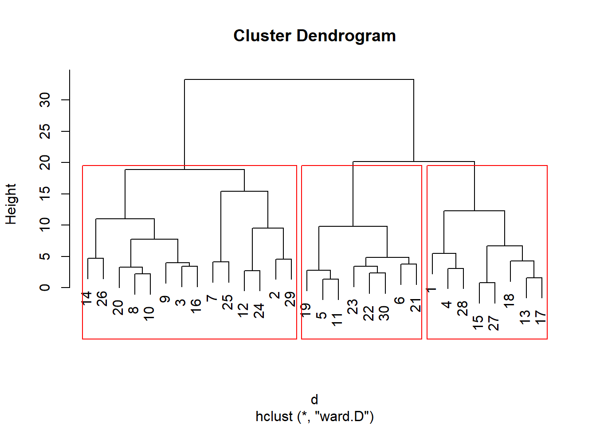

FALSE # A tibble: 30 × 7
FALSE Age Female Income Married Children Loan Mortgage
FALSE <dbl> <dbl> <dbl> <dbl> <dbl> <dbl> <dbl>
FALSE 1 48 1 17546 0 1 0 0
FALSE 2 40 0 30085. 1 3 1 1
FALSE 3 51 1 16575. 1 0 1 0
FALSE 4 23 1 20375. 1 3 0 0
FALSE 5 57 1 50576. 1 0 0 0
FALSE 6 57 1 37870. 1 2 0 0
FALSE 7 22 0 8877. 0 0 0 0
FALSE 8 58 0 24947. 1 0 1 0
FALSE 9 37 1 25304. 1 2 1 0
FALSE 10 54 0 24212. 1 2 1 0
FALSE # ℹ 20 more rowsMarket Segmentation Project
Market Segmentation Project
1. Introduction
Market segmentation is the process of dividing a broad consumer or business market into sub-groups of consumers based on some shared characteristics.
Purpose
Target the right audience
Improve marketing efficiency
Increase customer satisfaction
Boost sales and loyalty
2. Data Mining
We have customer data with these columns:
Age
Gender (1 = female, 0 = male)
Income
Married
Children
Loan
Mortgage
How to Segment This Market :
By Age Group – Young, Middle-aged, Senior
By Income Level – Low, Medium, High earners
By Family Status – Married vs Unmarried
By Financial Need – Has loan/mortgage or not
By Gender – Male vs Female
2.1 Data Exploration
2.1.1 Introduction
# Action the user selections from the Data tab.
# Build the train/validate/test datasets.
# nobs=30 train=21 validate=4 test=5
set.seed(crv$seed)
crs$nobs <- nrow(crs$dataset)
crs$train <- sample(crs$nobs, 0.7*crs$nobs)
crs$nobs %>%
seq_len() %>%
setdiff(crs$train) %>%
sample(0.15*crs$nobs) ->
crs$validate
crs$nobs %>%
seq_len() %>%
setdiff(crs$train) %>%
setdiff(crs$validate) ->
crs$test
# The following variable selections have been noted.
crs$input <- c("Age", "Female", "Income", "Married",
"Children", "Loan", "Mortgage")
crs$numeric <- c("Age", "Female", "Income", "Married",
"Children", "Loan", "Mortgage")
crs$categoric <- NULL
crs$target <- NULL
crs$risk <- NULL
crs$ident <- NULL
crs$ignore <- NULL
crs$weights <- NULL2.1.2 Summary
Summary of Training Dataset
We analyzed 21 observations across 7 numeric variables from the training set. There are no missing values. Variables include Age, Gender (Female), Income, Marital Status, Children, Loan, and Mortgage. Basic statistics such as minimum, maximum, mean, and quartiles (1st and 3rd) help understand the data spread. For example, 25% of individuals are younger than 37, and 75% are younger than 54. Binary variables like Female, Married, Loan, and Mortgage indicate proportions using means.
FALSE
FALSE Data frame:crs$dataset[crs$train, c(crs$input, crs$risk, crs$target)] 21 observations and 7 variables Maximum # NAs:0
FALSE
FALSE
FALSE Storage
FALSE Age double
FALSE Female double
FALSE Income double
FALSE Married double
FALSE Children double
FALSE Loan double
FALSE Mortgage doubleFALSE Age Female Income Married
FALSE Min. :22.00 Min. :0.0000 Min. : 8877 Min. :0.0000
FALSE 1st Qu.:37.00 1st Qu.:0.0000 1st Qu.:17546 1st Qu.:1.0000
FALSE Median :46.00 Median :1.0000 Median :22523 Median :1.0000
FALSE Mean :45.29 Mean :0.5714 Mean :26852 Mean :0.8095
FALSE 3rd Qu.:54.00 3rd Qu.:1.0000 3rd Qu.:29359 3rd Qu.:1.0000
FALSE Max. :66.00 Max. :1.0000 Max. :59804 Max. :1.0000
FALSE Children Loan Mortgage
FALSE Min. :0.0000 Min. :0.0000 Min. :0.0000
FALSE 1st Qu.:0.0000 1st Qu.:0.0000 1st Qu.:0.0000
FALSE Median :1.0000 Median :0.0000 Median :0.0000
FALSE Mean :0.9524 Mean :0.3333 Mean :0.3333
FALSE 3rd Qu.:2.0000 3rd Qu.:1.0000 3rd Qu.:1.0000
FALSE Max. :3.0000 Max. :1.0000 Max. :1.0000FALSE $Age
FALSE X...X.i
FALSE nobs 21.000000
FALSE NAs 0.000000
FALSE Minimum 22.000000
FALSE Maximum 66.000000
FALSE 1. Quartile 37.000000
FALSE 3. Quartile 54.000000
FALSE Mean 45.285714
FALSE Median 46.000000
FALSE Sum 951.000000
FALSE SE Mean 3.002493
FALSE LCL Mean 39.022623
FALSE UCL Mean 51.548806
FALSE Variance 189.314286
FALSE Stdev 13.759153
FALSE Skewness -0.216740
FALSE Kurtosis -1.094729
FALSE
FALSE $Female
FALSE X...X.i
FALSE nobs 21.000000
FALSE NAs 0.000000
FALSE Minimum 0.000000
FALSE Maximum 1.000000
FALSE 1. Quartile 0.000000
FALSE 3. Quartile 1.000000
FALSE Mean 0.571429
FALSE Median 1.000000
FALSE Sum 12.000000
FALSE SE Mean 0.110657
FALSE LCL Mean 0.340603
FALSE UCL Mean 0.802254
FALSE Variance 0.257143
FALSE Stdev 0.507093
FALSE Skewness -0.268303
FALSE Kurtosis -2.017385
FALSE
FALSE $Income
FALSE X...X.i
FALSE nobs 2.100000e+01
FALSE NAs 0.000000e+00
FALSE Minimum 8.877070e+03
FALSE Maximum 5.980390e+04
FALSE 1. Quartile 1.754600e+04
FALSE 3. Quartile 2.935910e+04
FALSE Mean 2.685174e+04
FALSE Median 2.252280e+04
FALSE Sum 5.638865e+05
FALSE SE Mean 3.083299e+03
FALSE LCL Mean 2.042009e+04
FALSE UCL Mean 3.328339e+04
FALSE Variance 1.996414e+08
FALSE Stdev 1.412945e+04
FALSE Skewness 1.038500e+00
FALSE Kurtosis -1.272220e-01
FALSE
FALSE $Married
FALSE X...X.i
FALSE nobs 21.000000
FALSE NAs 0.000000
FALSE Minimum 0.000000
FALSE Maximum 1.000000
FALSE 1. Quartile 1.000000
FALSE 3. Quartile 1.000000
FALSE Mean 0.809524
FALSE Median 1.000000
FALSE Sum 17.000000
FALSE SE Mean 0.087805
FALSE LCL Mean 0.626365
FALSE UCL Mean 0.992682
FALSE Variance 0.161905
FALSE Stdev 0.402374
FALSE Skewness -1.465227
FALSE Kurtosis 0.161265
FALSE
FALSE $Children
FALSE X...X.i
FALSE nobs 21.000000
FALSE NAs 0.000000
FALSE Minimum 0.000000
FALSE Maximum 3.000000
FALSE 1. Quartile 0.000000
FALSE 3. Quartile 2.000000
FALSE Mean 0.952381
FALSE Median 1.000000
FALSE Sum 20.000000
FALSE SE Mean 0.233770
FALSE LCL Mean 0.464745
FALSE UCL Mean 1.440017
FALSE Variance 1.147619
FALSE Stdev 1.071270
FALSE Skewness 0.553157
FALSE Kurtosis -1.213590
FALSE
FALSE $Loan
FALSE X...X.i
FALSE nobs 21.000000
FALSE NAs 0.000000
FALSE Minimum 0.000000
FALSE Maximum 1.000000
FALSE 1. Quartile 0.000000
FALSE 3. Quartile 1.000000
FALSE Mean 0.333333
FALSE Median 0.000000
FALSE Sum 7.000000
FALSE SE Mean 0.105409
FALSE LCL Mean 0.113453
FALSE UCL Mean 0.553213
FALSE Variance 0.233333
FALSE Stdev 0.483046
FALSE Skewness 0.657205
FALSE Kurtosis -1.639456
FALSE
FALSE $Mortgage
FALSE X...X.i
FALSE nobs 21.000000
FALSE NAs 0.000000
FALSE Minimum 0.000000
FALSE Maximum 1.000000
FALSE 1. Quartile 0.000000
FALSE 3. Quartile 1.000000
FALSE Mean 0.333333
FALSE Median 0.000000
FALSE Sum 7.000000
FALSE SE Mean 0.105409
FALSE LCL Mean 0.113453
FALSE UCL Mean 0.553213
FALSE Variance 0.233333
FALSE Stdev 0.483046
FALSE Skewness 0.657205
FALSE Kurtosis -1.6394562.1.3 Detailed Summary of Individual Variables
2.1.3.1. Age
FALSE Warning: The `fun.y` argument of `stat_summary()` is deprecated as of ggplot2 3.3.0.
FALSE ℹ Please use the `fun` argument instead.
Box Plot of Age
The box plot of the Age variable shows the distribution of ages in the training dataset. The median age is 46, and the interquartile range (IQR) lies between 37 (Q1) and 54 (Q3). This means that the middle 50% of individuals are between 37 and 54 years old.

Histogram of Age
The histogram of Age shows the distribution of ages in the dataset. Most individuals are between 35 and 55 years old, indicating a concentration in the middle-age range. The distribution appears roughly symmetric, with no extreme outliers, suggesting a balanced age profile in the sample.
2.1.3.2 Female
FALSE crs$dataset$Female
FALSE n missing distinct Info Sum Mean
FALSE 30 0 2 0.737 17 0.5667The Female variable represents gender in binary form, where 1 indicates Female and 0 indicates Male. Out of 30 total observations, 17 are Female, making up 56.67% of the dataset.
2.1.3.3. Income

Box Plot of Income
The box plot of Income displays the spread and distribution of income values in the dataset. The median income is around ₹22,523, with the interquartile range (IQR) spanning from ₹17,546 (Q1) to ₹29,359 (Q3). The plot also shows a right-skewed distribution, with some individuals having significantly higher incomes, indicating the presence of outliers or high earners in the sample.
Histogram of Income
The histogram of Income shows a right-skewed distribution, where most individuals earn between ₹10,000 and ₹30,000. A few observations fall in the higher income range, indicating the presence of high-income outliers. This suggests that income levels vary widely across the sample, with a concentration of individuals in the lower-to-middle income range.
2.1.3.4. Married
FALSE crs$dataset$Married
FALSE n missing distinct Info Sum Mean
FALSE 30 0 2 0.481 24 0.8The Married variable indicates marital status in binary form, where 1 denotes Married and 0 denotes Unmarried. Out of 30 observations, 24 are Married, which accounts for 80% of the dataset.
2.1.3.5. Children
Box Plot of Children
The box plot of Children reveals a median of 1, with most values ranging between 0 and 2. There are no extreme outliers, and the data indicates small family sizes.
Histogram of Children
The histogram shows that having 0, 1, or 2 children is most common in the dataset. The highest frequency is at 1 child, reflecting a trend toward smaller households.
2.1.3.6. Loan
FALSE crs$dataset$Loan
FALSE n missing distinct Info Sum Mean
FALSE 30 0 2 0.737 13 0.4333The Loan variable indicates whether a loan was approved (1) or not approved (0). Out of 30 total records, 13 have loans approved, which is 43.33% of the dataset. This suggests that less than half of the individuals in the dataset received a loan.
2.1.3.7. Mortgage
FALSE crs$dataset$Mortgage
FALSE n missing distinct Info Sum Mean
FALSE 30 0 2 0.721 12 0.4The Mortgage variable represents whether a person has a mortgage (1) or does not have one (0). Out of 30 individuals, 12 people have a mortgage, which is 40% of the dataset. This indicates that less than half of the individuals in the dataset have taken a mortgage.
2.1.4 Clustering Analysis of DemoKTC Dataset Using Manhattan and Canberra Distance Methods



FALSE Warning in data2$cluster <- km$cluster: Coercing LHS to a listFALSE [1] 1 2 2 2 3 3 1 3 2 2 3 1 2 3 2 2 2 3 3 2 3 2 3 1 1 3 2 2 1 3FALSE [1] "9 15 6"FALSE Age Female Income Married Children Loan Mortgage
FALSE 0.5446970 0.5666667 0.3757313 0.8000000 0.3111111 0.4333333 0.4000000FALSE Age Female Income Married Children Loan Mortgage
FALSE 1 0.5303030 0.5555556 0.4004398 1 0.2592593 0.4444444 1.0
FALSE 2 0.6530303 0.5333333 0.4361136 1 0.3333333 0.3333333 0.0
FALSE 3 0.2954545 0.6666667 0.1877126 0 0.3333333 0.6666667 0.5FALSE [1] 6.481327 11.117786 5.631834
FALSE cluster_id Age Female Income Married Children Loan Mortgage
FALSE 1 1 35.00000 0.6666667 18436.68 0 1.0000000 0.6666667 0.5000000
FALSE 2 2 40.38462 0.5384615 20906.03 1 1.2307692 0.4615385 0.4615385
FALSE 3 3 58.54545 0.5454545 41632.52 1 0.5454545 0.2727273 0.2727273Cluster Profiling Summary:
Cluster 1: Lower values on most variables – possibly conservative or cost-sensitive group.
Cluster 2: High on variable 3 and 4 – possibly tech-savvy or performance-focused.
Cluster 3: High on variable 2, lower on variable 3 – likely a balanced preference group.
3. Insights and Discussion
The analysis reveals that the dataset is dominated by middle-aged individuals, mostly in the range of 35 to 55 years. This indicates that marketing messages emphasizing stability, financial planning, and family security may resonate well with the majority. The income distribution, which is skewed towards the lower to middle range, but with the presence of high-income outliers, suggests that there is room for dual strategies: affordable and value-based offerings for the majority, and premium products for the smaller high-income group. The overwhelming proportion of married individuals indicates that family-oriented offerings, such as family insurance packages, bundled services, or family-centric promotions, could be highly effective. With about 40 to 45 percent of individuals having loans or mortgages, cross-selling financial services and debt management products becomes a strong opportunity.
The cluster analysis strengthens these insights by showing that customers fall broadly into three categories: conservative low spenders, financially active families, and independent professionals. Each of these groups presents unique needs, and tailoring marketing strategies accordingly can significantly improve efficiency and effectiveness.
4. Conclusion
This project demonstrates how market segmentation can be applied using demographic and financial data. The combination of descriptive analysis and clustering reveals three meaningful customer segments, each with distinct characteristics and needs. Businesses that adapt their marketing strategies to these groups can expect better customer targeting, improved satisfaction, and stronger sales growth. In summary, segmentation has proven to be a powerful tool for understanding consumer diversity and aligning business strategies with customer needs.